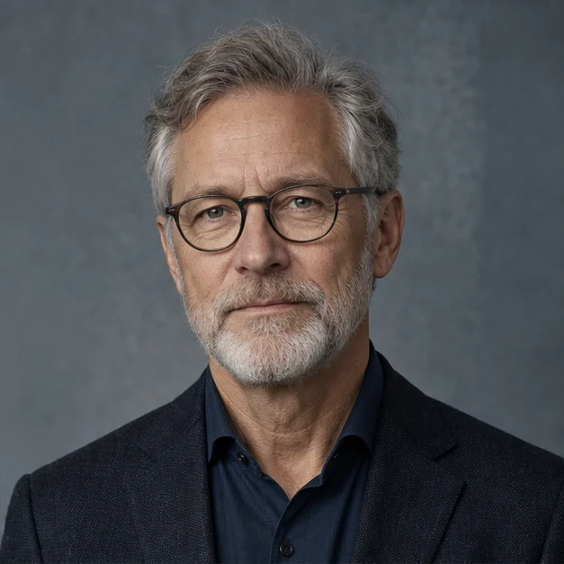
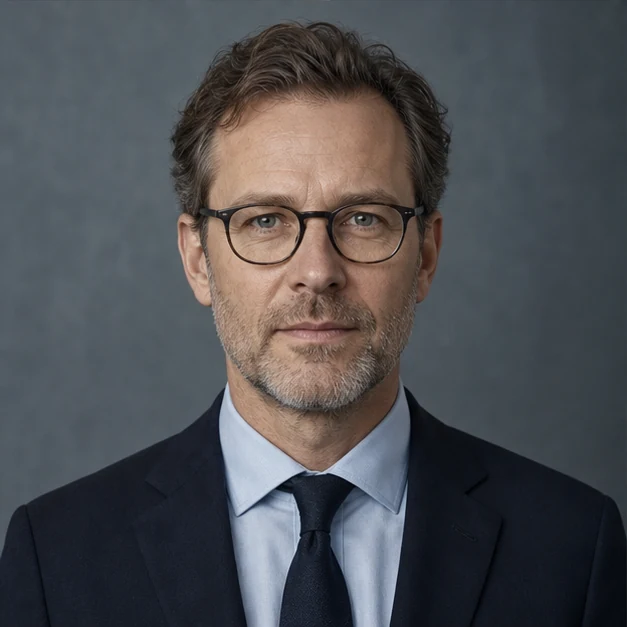
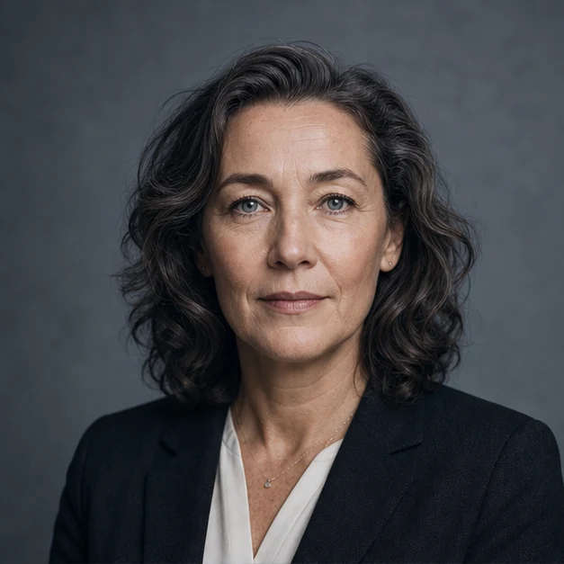
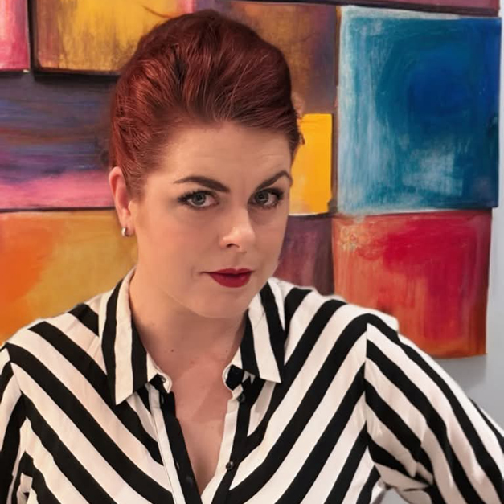
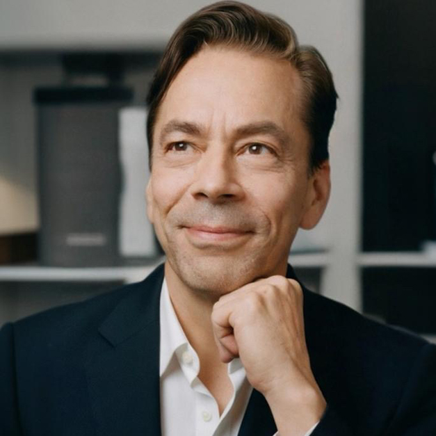
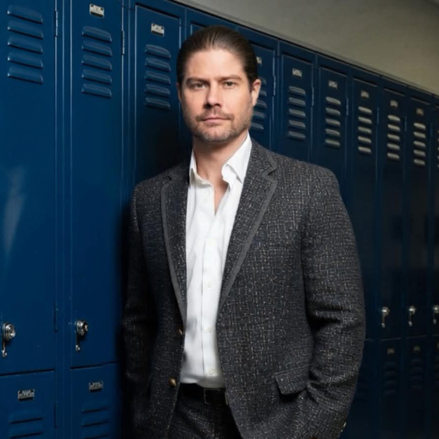

Dan Katz
Leg. psykolog och leg. psykoterapeut.
03 Signatärer
Signatärerna förenar vetenskaplig tyngd med erfarenhet av offentlighet, beslut och folkbildning.
Till startsidanRådets profiler
Samtliga namn, porträtt och meritbeskrivningar är fiktiva i denna layout och ersätts med rådets utsedda ledamöter.
Leg. psykolog och leg. psykoterapeut.

Epidemiolog och vetenskaplig rådgivare med tre decennier inom folkhälsa och evidensbaserad policy.

Professor i teknikhistoria och prisbelönt folkbildare i frågor om innovation, risk och samhällsansvar.

Molekylärbiolog och akademiledamot med lång erfarenhet av forskningsetik och öppen vetenskap.

Nationalekonom och institutionsforskare med fokus på långsiktiga beslut, tillit och offentlig förvaltning.

Fil. kand, kulturvetare, techentreprenör och initiativtagare till Vetenskapskriteriet.
lotten@vetenskapskriteriet.se

Civilekonom, system- och AI-arkitekt, Microsoft Alumni.

Datorprogrammerare och initiativtagare till Vetenskapskriteriet.
anders@vetenskapskriteriet.se
I dialog med samhället